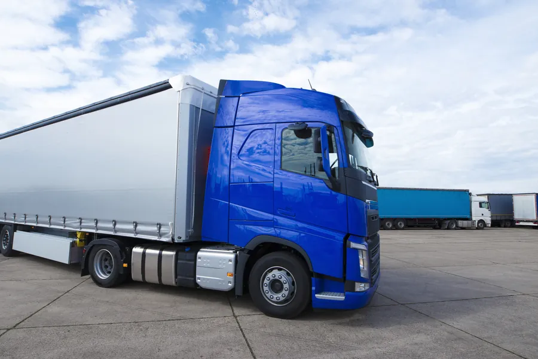
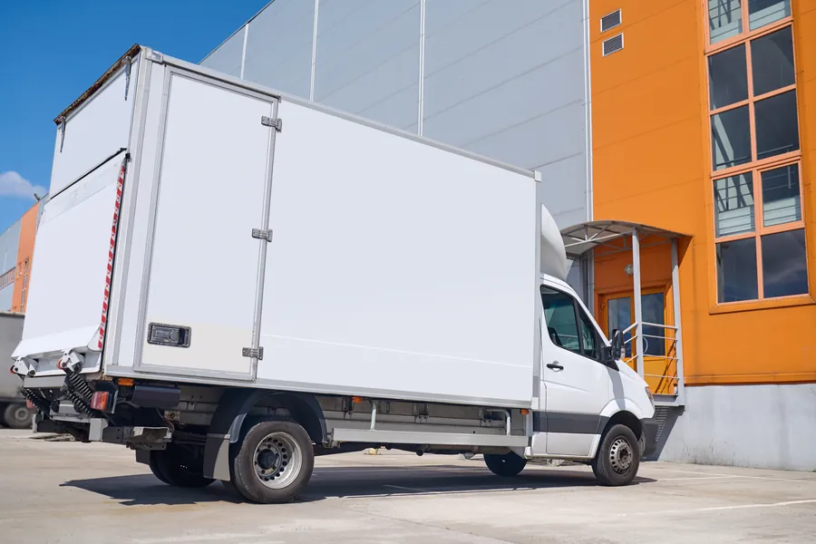
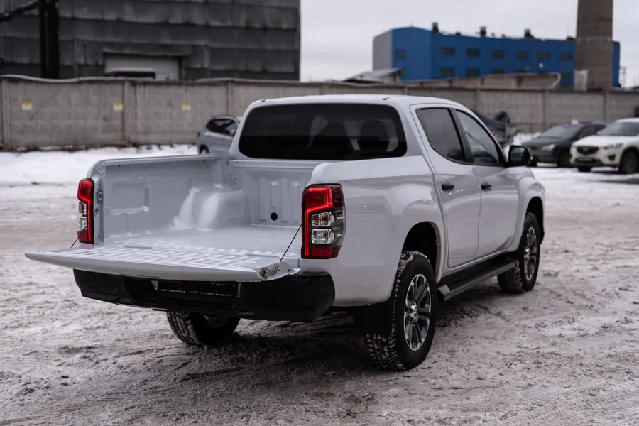
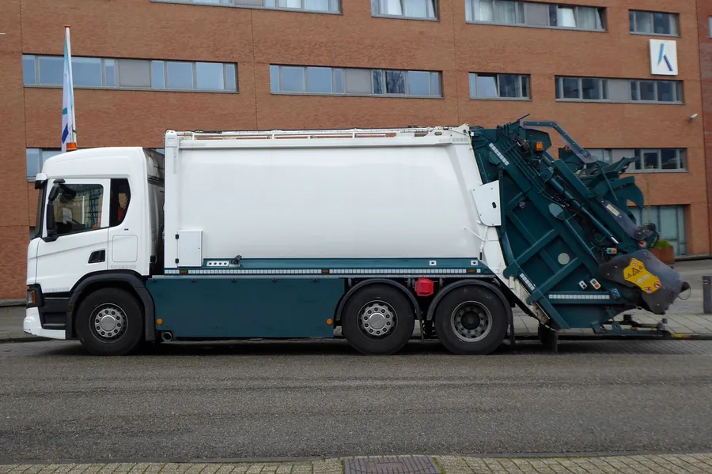

HGVs, trucks, vans and specialist vehicles
Universal Auctions Group runs trade-only commercial vehicle auctions online for HGVs, tippers, curtainsiders, vans, pickups and specialist vehicles located across the UK. Trade buyers bid from anywhere in the UK or overseas, and each vehicle stays where it is until it is sold and paid for.
Buying
HGVs, tippers, curtainsiders, vans, pickups and specialist bodies
Sold in trade-only timed online auctions. Registration is free and you bid from the depot, the office or your phone.
Selling
For hauliers, contractors, dealers, traders, lenders and administrators
Vehicles are sold from your yard to trade buyers across the UK and overseas, with a record of the sale for your file.
Stock varies from auction to auction, from a single pickup to a yard of trucks. These are the body types buyers watch for.

HGVs and tractor unitsArticulated tractor units and rigid HGVs, with mileage, plated weights and MOT status listed where the vendor supplies them.
Box trucks and curtainsidersBox trucks, curtainsiders, flatbeds and refrigerated bodies for haulage and distribution.
Pickups and 4x4sPickups and 4x4 utility vehicles from contractors, estates and businesses of every kind.
Specialist vehiclesRecovery trucks, skip lorries, refuse vehicles, minibuses, welfare units and mobile workshops.Businesses replacing or reducing their vehicles, hauliers, contractors, traders and dealers, lenders recovering vehicles, and insolvency professionals selling a company's assets.
Where the vendor supplies a vehicle's previous use or history, it is in the lot description. Ex-fleet describes how a vehicle was used before, so take the provenance of each vehicle from its listing.
Universal Auctions Group acts as auctioneer and agent for the vendor, and the contract of sale is between the vendor and the successful buyer.
For trade buyers
Because specialist bodies are hard to find on a forecourt, the price is set by open bidding, and you can bid from anywhere.
Bodies that rarely reach a forecourt
Tippers, grab loaders, recovery trucks and converted vehicles are hard to source through dealer stock, and they come up at auction.
The price is set by the bidding
Every lot is open to every registered trade buyer, and you can see the bidding as it happens. There is no asking price to negotiate.
The details are on the lot
Mileage, MOT, plated weights, body specification and documents are listed where the vendor supplies them, so you can compare vehicles side by side.
Trade-only, online, from anywhere
You bid against other businesses, from your desk or your phone, wherever the vehicle happens to be.
Four steps, from registering to collecting what you have won.
Register to bid
Registration is free. Manual approval and identification may be required before an account can bid, so register ahead of the sale you are watching.
Read the lot and set your maximum
Each lot carries the vendor's description and photographs, the vehicle's location, its VAT treatment, and the buyer's premium on its Additional Fees tab. Add them up and decide your ceiling before the lot closes.
Bid in the timed online auction
Bidding normally remains open for several days, with the exact opening and closing times stated for each auction. In our current timed-auction format, a bid in the last ten minutes extends that lot by ten minutes, so nobody wins on the buzzer.
Pay and collect
We invoice you after the sale, payable in full by bank transfer within 24 hours. Once your payment clears we release the collection details, and you collect from the stated location by appointment.
The full buying process, costs and collection are on the buying page.
Before you bid
The registration number is your best research tool. Use it before you bid, and price the vehicle on what it needs to get back on the road.
Check the MOT history and DVLA vehicle information against the registration, compare the recorded mileages with the lot description, and make your own finance, title and insurance-history enquiries. On HGVs, look at the plated weights, the tachograph and the date of the next annual test, and check any auxiliary equipment such as a tipping body, crane or tail lift.
Then plan the move: a driver with the right licence and a vehicle that is legal for the road, or a recovery vehicle or low-loader. Buyers are responsible for arranging collection and transport. Any delivery option specifically stated within a lot is provided by the seller and subject to separate agreement.
For sellers
We run online sales for hauliers, contractors, businesses, dealers, traders, lenders and administrators, and every vehicle is open to trade buyers across the UK and overseas.
Sold from your yard
Vehicles stay where they are. Buyers collect by appointment once they have paid, so nothing has to go to an auction site first.
Paid before anything leaves
Collection is authorised only after the buyer has paid, and the seller is ordinarily paid within 24 hours of our receiving cleared funds.
A record for the file
Lot-by-lot results and the marketing and bidding record of the sale, within what confidentiality and data protection allow.
How a sale is set up, and what it costs, are on our pages for sellers: why sell with us, how selling works and asset disposal for administrators and receivers.
The questions buyers and sellers ask before their first commercial vehicle sale. For anything else, get in touch.
A sale of HGVs, trucks, vans, pickups and specialist vehicles by open bidding. At Universal Auctions Group these run as trade-only timed online auctions, so registered business buyers bid remotely without travelling to an auction hall, and the highest bid at the close wins the lot.
Whatever the vendor supplies, which the lot description lists: V5C availability, MOT information, service records, plated weights, tachograph details and equipment documents. Not every document is available for every lot, so check the listing before you bid. Where a registration number is available, Universal Auctions Group carries out the vehicle data check described in our terms before the vehicle is listed. It is not a mechanical inspection, title guarantee or substitute for the buyer's own enquiries.
Any business that registers to bid. All our auctions are trade-only, so you register and bid in a business capacity. Overseas trade buyers are welcome to participate. Manual approval and identification may be required before an account can bid.
The buyer's premium, at the rate shown on the lot's Additional Fees tab, and VAT where it applies to that lot, which the lot description states. Collection and transport are yours to arrange, so allow for them in your maximum bid.
Payment is due in full by bank transfer within 24 hours of the invoice. Collection is by appointment once your payment has cleared, within the period stated in that sale's terms. Plan the driver, or the recovery vehicle, before the lot closes.
Yes. Overseas trade buyers are welcome to participate. Export buyers arrange their own transport, customs clearance and export documentation, and should check the destination country's registration rules before bidding. On an export sale the VAT is charged as a deposit, and any refund is conditional on satisfactory export evidence reaching both the seller and us within 28 days of the invoice, in accordance with the auction terms. VAT on the buyer's premium is not refundable.
Yes, from a single van to a yard of trucks. We sell for hauliers, contractors, businesses, dealers, traders, lenders and administrators. Vehicles are sold from your premises and buyers collect after paying. Talk to us about the vehicles and your timetable.
Lots are sold as seen, where lying. Descriptions and photographs come from the vendor, and mileage and history are not warranted unless the lot expressly says so, so form your own view of each vehicle before you bid.
For buyers
For sellers
Register now and you will be approved and ready before the next vehicle you need comes up.
Looking for something else? Browse by category:
Selling commercial vehicles? Talk to us about a sale.
Every sale is governed by the auction terms and conditions.